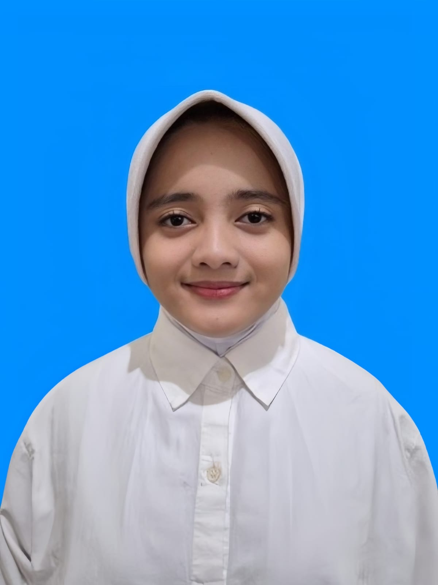

Tentang saya

Saya berasal dari Kalimantan tengah kota palangka raya dan saat ini merupakan mahasiswa Program Studi Informatika Universitas Islam Indonesia.Saya tertarik pada pengembangan aplikasi berbasis web karena sebelumnya saya memiliki pengalaman belajar Rekayasa Perangkat Lunak (RPL) di SMK. Saat ini saya sedang mempelajari HTML, CSS, Java, dan pengembangan aplikasi.
| Kegiatan | Peran | Waktu |
|---|---|---|
| Praktikum PABW | Peserta | |
| Kelas Terbuka Kampus | Peserta | |
| Organisasi kemahasiswaan Divisi Sosial dan Agama | Anggota |
Karya saya
- Halaman Kelas Terbuka Kampus — praktikum P03, HTML semantik dan form, 2026.
- Membuat game dan website saat SMK — proyek Rekayasa Perangkat Lunak, 2024.
- Expo — kegiatan expo, 2026.
Hubungi saya
Isi formulir berikut. Semua kolom bertanda wajib harus diisi.
Pertanyaan yang Sering Ditanyakan
Mengapa memilih Informatika?
Saya memilih Informatika karena sejak SMK saya sudah memiliki pengalaman di jurusan Rekayasa Perangkat Lunak (RPL), sehingga saya tertarik untuk melanjutkan dan memperdalam pengetahuan tentang teknologi, pemrograman,serta pengembangan aplikasi dan website.
Apa yang sedang dipelajari?
Saya sedang mempelajari HTML, CSS, Java, dan pengembangan web.
Perjalanan Belajar
- — Memulai perjalanan sebagai mahasiswa.
- — Mempelajari pemrograman dan pengembangan web.
- — Mengerjakan praktikum PABW.
Keterampilan
- HTML
- Membuat struktur halaman web.
- CSS
- Mengatur tampilan dan layout halaman web.
- Java
- Mempelajari pemrograman berorientasi objek.